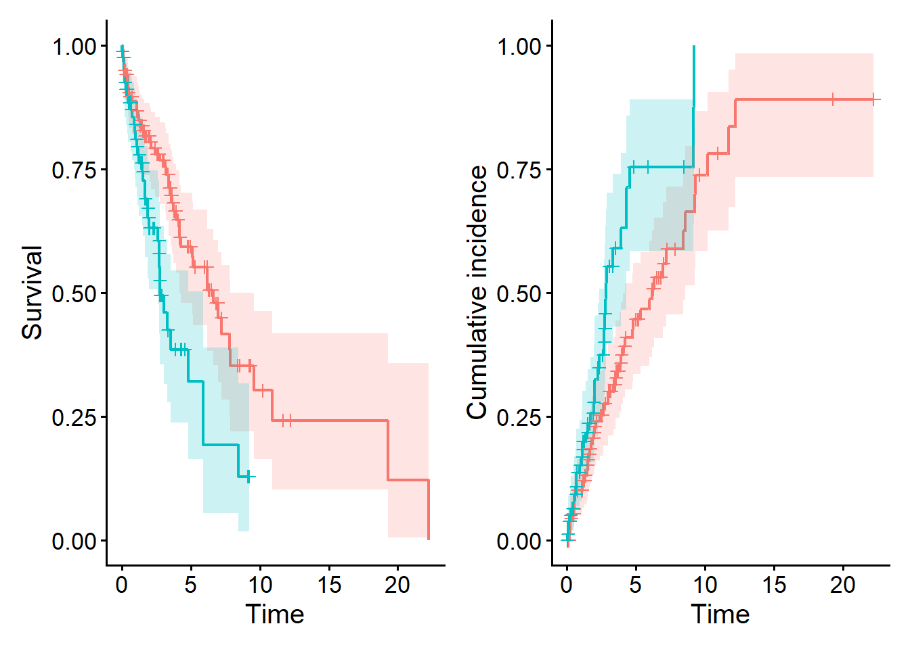

generate_data <- function(n=200, hr1, hr2) {
stoma <- rbinom(n, size = 1, prob = 0.4)
sex <- rbinom(n, size = 1, prob = 0.5)
age <- rnorm(n, mean = 65 + 3 * stoma, sd = 8)
hazard_relapse <- ifelse(stoma == 1, hr1*0.10, 0.10) # hazard for relapse
hazard_death <- ifelse(stoma == 1, hr2*0.10, 0.10) # hazard for death
hazard_censoring <- 0.05 # hazard for censoring
# Latent times to relapse, death, and censoring ----------------
t_relapse <- rexp(n, rate = hazard_relapse)
t_death <- rexp(n, rate = hazard_death)
t_censoring <- rexp(n, rate = hazard_censoring)
## --- Overall survival (OS) -----------------------------------
time_os <- pmin(t_death, t_censoring)
status_os <- as.integer(t_death <= t_censoring) # 1 = death, 0 = censored
## --- Relapse-free survival (RFS) -----------------------------
time_rfs <- pmin(t_relapse, t_death, t_censoring)
status_rfs <- integer(n)
status_rfs[time_rfs == t_relapse & time_rfs < t_censoring] <- 1 # relapse
status_rfs[time_rfs == t_death & time_rfs < t_censoring] <- 1 # death
## --- Cumulative incidence of relapse (CIR) -------------------
time_cir <- pmin(t_relapse, t_death, t_censoring)
status_cir <- integer(n)
status_cir[time_cir == t_relapse & time_cir < t_censoring] <- 1 # relapse
status_cir[time_cir == t_death & time_cir < t_censoring] <- 2 # death (competing risk)
dat <- data.frame(
id = 1:n,
sex = factor(sex, levels = c(0, 1), labels = c("WOMAN", "MAN")),
age = age,
stoma = factor(stoma, levels = c(0, 1),
labels = c("WITHOUT STOMA", "WITH STOMA")),
time_os = time_os,
status_os = status_os,
time_rfs = time_rfs,
status_rfs = status_rfs,
time_cir = time_cir,
status_cir = status_cir
)
return(dat)
}When Bias Creeps In: Selection, Information, and Confounding in Clinical Surveys

Study Design 5 − When Bias Creeps In
Keywords: observational study, outcome, simulation, survival/competing-risk, study design
“Hard endpoints” and soft feelings
Me: “I’m home…completely drained. Is there anything sweet?”
Dad: “There’s a strawberry daifuku. And I just brewed coffee.”
Me: “You are objectively improving my quality of life. Today was rough. Clinic was packed, and the train home was rush-hour level insane.”
Dad: “That sounds like classic Japanese hospital plus Tokyo commute. Here, coffee.”
Me: “Thanks. So, there’s something I wanted to ask. You know how people in oncology love to say ‘hard endpoint’ and ‘soft endpoint’?”
Dad: “Yes, people say that a lot.”
Me: “One of my senior colleagues is really into clinical trials. She keeps saying things like:
‘Return-to-work is such a soft endpoint.
OS is a hard endpoint.
Soft is bad, hard is good.’
And every time she says that, I feel like my return-to-work study is being gently dissed. I sort of get what she means, but not really.”
Dad: “I can imagine the tone. The way people use those words is a bit loose. If we want to be clearer, it might help to think in terms of objective measure vs subjective measure.”
Me: “So OS is ‘hard’ because it’s objective?”
Dad: “Pretty much. For overall survival (OS), you only need date of death or the last date of confirmation of being alive. That’s relatively straightforward. For something like progression-free survival (PFS), you need to decide when progression happened. That depends on factors unrelated to disease status:”
- imaging timing
- how you interpret the scans
- sometimes even symptoms unrelated to cancer
Dad: “There’s more judgment involved. That’s why people call it a soft endpoint.”
Me: “And return-to-work is even more ‘soft’, right? We’re asking about patients’ own perceptions, jobs, feelings…”
Dad: “Right, but that doesn’t make it meaningless. I think what your colleague meant was something like:
‘When you work with soft endpoints,
try to measure them as consistently and objectively as possible.’”
Me: “So not ‘soft = trash’, but ‘soft = more room for bias, so be careful’.”
Dad: “Exactly. Even ‘hard’ endpoints like death can be biased if follow-up is sloppy. If, for example, you only track deaths in patients who keep coming to the hospital, you might systematically miss deaths in those who stop showing up. So hard endpoints are not automatically free of bias.”
Me: “Okay, that makes me feel better about my study. I’ll phrase it as: ‘a soft endpoint, measured with hard discipline.’”
Dad: “That’s actually a great line for the methods section. To be precise, you don’t need perfect information on every death. What matters is that the process of collecting death information is not related to patients’ health status. If whether we obtain death information depends on how sick someone was, that creates bias.”
Me: “It means censoring is no longer independent of prognosis, right?”
Dad: “Yes. Remember the Kaplan–Meier and Aalen–Johansen curves I showed you? Those estimators can handle censoring, but they only remain unbiased if censoring occurs randomly, unrelated to the outcome. For example, when all patients are censored at 1 year because the study ends, or when an external reason stops follow-up for some patients.”
Me: “I get the idea. But there are situations where we just can’t track deaths perfectly. We can only do our best.”
Bias in Kaplan–Meier curves
Me: “Okay…besides that, what other types of bias should I be careful about in my survey?”
Father: “As I said before—competing risks. In time-to-event data, ignoring competing risks can lead to bias. Can you take out your laptop?”
Me: “What? I literally just came back from work…”
Father: “It’ll be quick. I’ll tweak the R script we used last time and show you what statistical bias looks like with a simple simulation.”
Bias of the Kaplan–Meier curve in a simulated dataset with recurrence and competing risks
In our previous simulations of cumulative incidence of recurrence (CIR), we generated patients who could die before experiencing recurrence (a competing risk). With a simple experiment, you can confirm that the Kaplan–Meier estimator becomes biased in the presence of competing risks.
Code of generate_data() used for data generation
Aalen-Johansen curves for cumulative incidence of relapse (CIR)
Kaplan–Meier曲線とAalen-Johansen曲線は、どちらもcifmodelingパッケージのcifplot()を使って生成できますが、イベントのコーディングを入力するcode.event1、code.event2とデータの型を表すoutcome.typeを、指定する必要があります。generate_data()で生成したシミュレーションデータでは、CIRのイベントは以下のようにコーディングされていました。
status_cir=1: 再発status_cir=2: 再発を経験しない死亡status_cir=0: 打ち切り
以下のRスクリプトでは、最初のcifplot()により、再発（code.event1=1）に関するAalen-Johansen曲線（aj_event1）を出力しています。縦軸は累積発生確率ではなく、1-累積発生確率を選んでいる点にも注意してください（type.y="surv"）。そして次のcifplot()ではイベントを入れ替えて、再発を経験しない死亡（code.event1=1）に関するAalen-Johansen曲線（aj_event2）を出力し、cifpanel()に用いて2つの図を左右に配置したひとつの図を表示しています。左右の累積発生確率の和に注目してください。この図からは、再発の累積発生確率と（再発を経験しない）死亡の累積発生確率の和は、時間が経つにつれ1に近づくが、1を超えることはないことがわかります。仮に打ち切りがなかったとしたら、再発と（再発を経験しない）死亡のどちらか一方しか生じないため、Aalen-Johansen曲線の和が1を超えないのは自然なことです。
# devtools::install_github("gestimation/cifmodeling") #インストールが必要なら実行
library(cifmodeling)
set.seed(46)
dat <- generate_data(hr1=2, hr2=1.5) #再発ハザード比2, 死亡ハザード比1.5のデータ生成
aj_event1 <- cifplot(Event(time_cir, status_cir) ~ stoma,
data = dat,
outcome.type = "competing-risk",
type.y = "surv",
code.event1 = 1,
code.event2 = 2
)
aj_event2 <- cifplot(Event(time_cir, status_cir) ~ stoma,
data = dat,
outcome.type = "competing-risk",
type.y = "risk",
code.event1 = 2,
code.event2 = 1
)
aj_list <- list(aj_event1$plot, aj_event2$plot)
aj_panel <- cifpanel(rows.columns.panel = c(1,2), plots=aj_list)
print(aj_panel)
Kaplan–Meier curves for cumulative incidence of relapse (CIR)
実際の研究では、死亡を打ち切りとして扱った生存時間解析の結果をしばしば目にします。この解析に対応するKaplan–Meier曲線は、以下のようにイベントのコーディングを変更し、outcome.type="survival"を指定することで出力できます。
status_cir1=1: 再発status_cir1=0: 再発を経験しない死亡/打ち切りstatus_cir2=1: 再発を経験しない死亡status_cir2=0: 再発/打ち切り
新しく作ったイベント変数status_cir1とstatus_cir2を用いると、再発のKaplan–Meier曲線と（再発を経験しない）死亡のKaplan–Meier曲線を描くことができます。これらのKaplan–Meier曲線を左右に配置した図を、先ほどのAalen-Johansen曲線の図と比べてみてください。Aalen-Johansen曲線の和とは異なり、Kaplan–Meier曲線の和が1を超えていることが読み取れたでしょうか。
dat$status_cir1 <- as.numeric(dat$status_cir==1)
km_event1 <- cifplot(Event(time_cir, status_cir1) ~ stoma,
data = dat,
outcome.type = "survival",
type.y = "surv"
)
dat$status_cir2 <- as.numeric(dat$status_cir==2)
km_event2 <- cifplot(Event(time_cir, status_cir2) ~ stoma,
data = dat,
outcome.type = "survival",
type.y = "risk"
)
km_list <- list(km_event1$plot, km_event2$plot)
km_panel <- cifpanel(rows.columns.panel = c(1,2), plots=km_list)
print(km_panel)
Three familiar troublemakers: selection, information, confounding
Dad: “Sure. You’re mailing out questionnaires, right? When a lot of patients don’t respond, that introduces bias. For example, are you asking about annual income?”
Me: “Maybe.”
Dad: “Then be careful. Sensitive questions can lower the response rate. If non-response is systematic, your sample no longer represents the target population. For example:”
- Patients who are doing well may be more likely to answer.
- Patients who are very sick, depressed, or busy may be less likely to answer.
Dad: “Then your estimated return-to-work proportion can be too optimistic. Also, suppose patients with a stoma are more likely to return the questionnaire than those without a stoma. Then comparing those two groups could be criticized because of differential response rates.”
Me: “Is that… confounding?”
Dad: “You know the term? Nice. Confounding is a type of bias, but this is different. When the selection of participants itself depends on certain characteristics, we call it selection bias. And if the information collected is inaccurate—like when people overreport income — that’s information bias. In classes on study design and observational studies, we divide bias into three main categories:
- Selection bias
- Information bias
- Confounding
Dad: “Most biases fall into one of these three. So when designing a study, we teach students:”
Make sure you’re not selecting only certain types of people.
Collect information in a way that avoids systematic errors.
When comparing groups, adjust for characteristics other than the variable of interest.
Dad: “Keeping these three in mind makes countermeasures much easier.”
Me: “Hmm… selection bias, information bias… Clinical research terminology is so confusing. But I definitely don’t want my survey to fail. I’ll write this down.”
Random error and bias
Statistics is a discipline of uncertainty, but in clinical research it’s important to distinguish random error from bias.
Random error: variability centered around the truth. Decreases with larger sample size.
Bias: a systematic deviation from the truth. Does not disappear unless the study design and data collection are improved.
A helpful analogy: Random error is like the spread of arrows around the bull’s-eye. Bias is when you’re consistently aiming off-center.
The bias you observed in the Kaplan–Meier curve under competing risks is not random error.
- Reducing random error = increase sample size.
- Reducing bias = improve study design.
That is one of the central themes of this Story.
This concludes the Study Design series. If you’d like to keep reading over your next cup of coffee, the following episodes are waiting:
- [Reading a Paper over a Cup of Coffee]
- [P-Value Explanations That Seem Plausible at First Glance]
- [Beyond 0.05: Interpreting P-Values in a Clinical Trial]
- [Understanding Confidence Intervals via Hypothetical Replications in R]
- [Alpha, Beta, and Power: The Fundamental Probabilities Behind Sample Size]